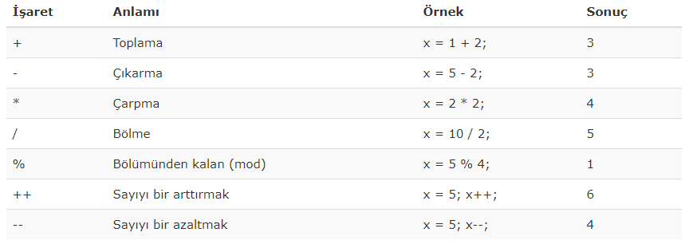
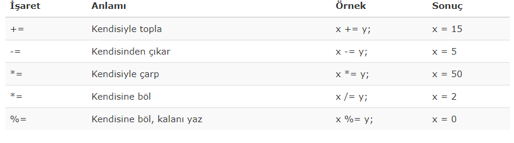
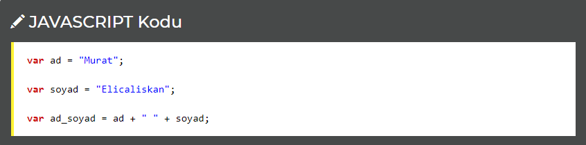
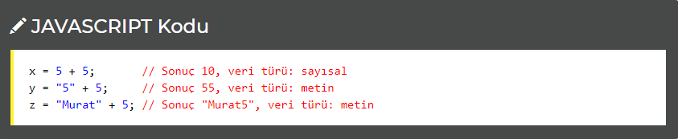

JavaScript'te değişkenler arası işlemleri operatörler yani bazı özel işaretler yoluyla yaparız.
Bir değişkene değer atamak için eşittir kullanırız. Örneğin x değişkeninin değerinin 5 olmasını istiyorsak; x = 5; yazarız.
Eşittir sadece değer atamak için değil, aynı zamanda yapılan işlemlerin sonucunu elde etmek için de kullanılır. Örneğin x = y + z; kodunda x'in değeri y ile z'nin toplamı olacaktır.
Sayısal veri içeren değişkenler arasında matematiksel işlemler yapmak için kullanmamız gereken işaretler aşağıdaki tabloda gösterilmiştir;
Yukarıda anlatıldığı gibi bunun için eşittir (=) kullanırız. Ancak eşittirin solunda yer vereceğimiz matematiksel bir işaret yoluyla da değer atayabiliriz. Burada atanan değişken "kendisiyle topla", "kendisiyle çarp" gibi bir anlam kazanır.
NOT: Aşağıdaki tabloda x = 10, y = 5 alınacaktır!
İki metinsel veriyi birleştirmek için artı (+) işareti kullanılır.
Sayı içeren bir değişkeni metin içeren bir değişkenle toplarken; her iki değişken de sayıyla ifade edilebiliyorsa sonuç sayısal bir değer olur, bunun dışında ise metinsel bir değer elde edilir.
Uyarı: Kodu incelemek için örneği incele dedikten sonra CTRL+U tuşuna basınız
***JavaScript programlama dilinde toplama işlemi için kullanılan operatör + işaretidir.
Uyarı: Kodu incelemek için örneği incele dedikten sonra CTRL+U tuşuna basınız
***JavaScript programlama dilinde çarpma işlemi için kullanılan operatör * işaretidir.
örneği inceleUyarı: Kodu incelemek için örneği incele dedikten sonra CTRL+U tuşuna basınız
*** sayi += 10; sayı değişkeninin değerine 10 ekle anlamına gelir.
örneği inceleUyarı: Kodu incelemek için örneği incele dedikten sonra CTRL+U tuşuna basınız